JMeter
Test Script Recorder with JMeter
Getting Started
Before you can begin using the Test Script Recorder, you need to set up a basic test plan in JMeter. This involves configuring your test plan and saving your work before starting the project.
Creating a Test Plan: To create a test plan:
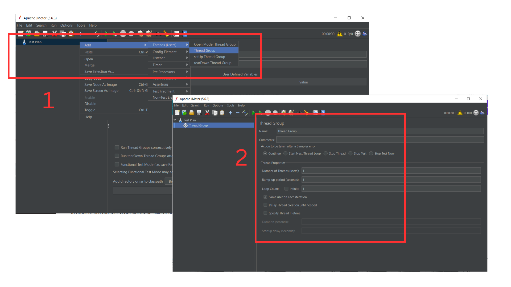
Open JMeter and navigate to the Test Plan element (the root of every JMeter test).
Right-click the Test Plan, select Add > Threads (Users) > Thread Group.
Configure the thread group to simulate multiple users and set loop counts and ramp-up periods as needed.
Saving the Test Plan: To avoid losing your work:
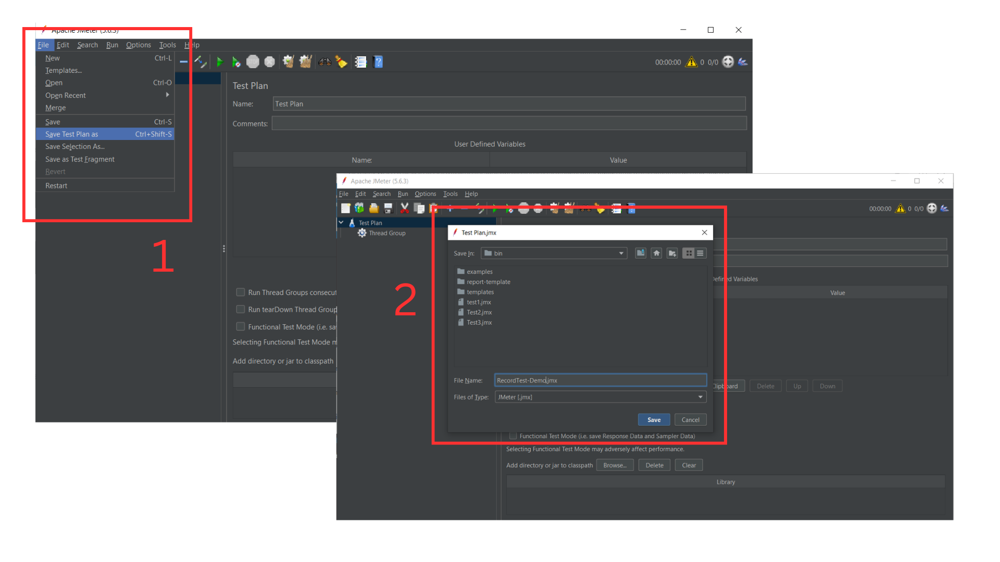
Go to File > Save As and name your test plan file. It is recommended to save the test plan at regular intervals to avoid losing progress.
Setting Up the Proxy for the Recorder
In order to use the Test Script Recorder, JMeter needs to intercept and capture your browser’s HTTP/HTTPS traffic. To do this, you must set up a proxy in both JMeter and your browser.
Configure JMeter Proxy
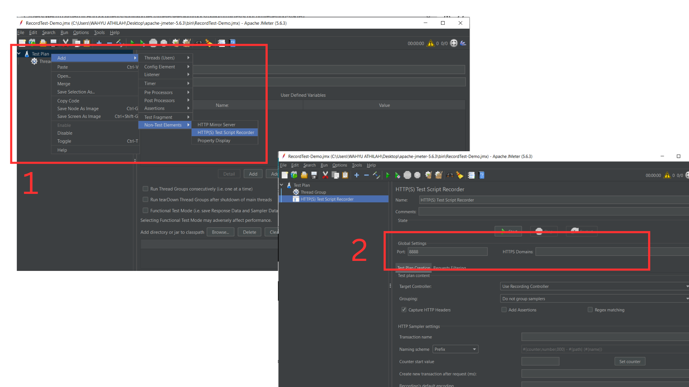
Right-click on Test Plan, then select Add > Non-Test Elements > HTTP(S) Test Script Recorder.
In the HTTP(S) Test Script Recorder window, configure the port (default is 8888) and ensure Target Controller is set to the appropriate location where the recorded requests will be stored (usually under Thread Group).
Configure Your Browser
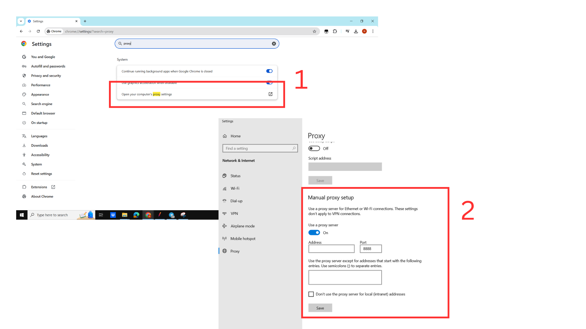
Open your browser settings and navigate to the Network or Proxy section.
Configure the browser to use a manual proxy, setting the IP address to localhost and the port to 8888 (or the port number set in JMeter).
In Firefox or Chrome, disable caching in the developer tools to prevent cached responses from being recorded.
Recording User Interactions for Load Testing
Once the proxy is set up, you are ready to record real-time user interactions.
Start the Recording Session
In JMeter, ensure that the HTTP(S) Test Script Recorder is running, and begin performing actions in the browser, such as navigating to different pages, submitting forms, and clicking buttons.
Capturing HTTP Requests
Each interaction you perform in the browser will be captured by JMeter as an HTTP request and added to your test plan.
Organizing Recorded Steps
Recorded interactions will appear under the Thread Group. You can organize them into different samplers, controllers, or folders to better structure your test.
Saving Your Recorded Test Plan
After recording all necessary actions, save the test plan by clicking File > Save.
Managing and Editing Recorded Test Plans
Once your recording is complete, it’s often necessary to clean up and fine-tune the test plan for efficiency and clarity.
Remove Unnecessary Requests
Sometimes, JMeter captures extra requests that are not relevant to your test. Identify and remove these requests by selecting them in the Thread Group and pressing Delete.
Edit Recorded Requests
Modify recorded requests to better suit the test. For example, add parameters, modify headers, or configure different assertions to verify response data.
Add Assertions and Timers
Use assertions to validate server responses, and add timers to simulate real user think times between requests.
Running and Analyzing Recorded Test Plans
After creating and refining the test plan, you can execute it to simulate the load and analyze the system’s performance.
Running the Test Plan
To run the test, click the Start button (green arrow) in the JMeter toolbar.
JMeter will begin sending requests based on your recorded and configured test plan.
Analyzing Test Results
Use listeners such as View Results Tree and Summary Report to observe the test’s performance.
Review metrics such as response times, throughput, error rates, and more to assess how well the system handles the load.
Identifying Bottlenecks
Analyze slow responses or failed requests to identify performance bottlenecks. Use these insights to adjust system configurations or optimize the application.
Web Testing Plan with JMeter
Performance testing is essential to ensure that web applications can manage real-world user loads without sacrificing functionality or speed. A web testing plan in JMeter enables effective performance and load testing by simulating multiple users accessing the application simultaneously. As an open-source tool, Apache JMeter is highly valued for its flexibility and robustness in web performance testing. By replicating high user traffic, JMeter allows testers to monitor performance, pinpoint bottlenecks, and assess overall system reliability under load conditions.
This testing plan outlines the process for creating a JMeter test plan for Instagram, a widely used social media platform. The test will simulate high user loads on various sections of Instagram, including the Login, Explore, Inbox, Reels, and Account sections, to assess system performance and responsiveness. This test will demonstrate the site’s ability to handle concurrent users under different load scenarios, as well as monitor for any performance issues that may arise.
Setting Up the Test Plan Template
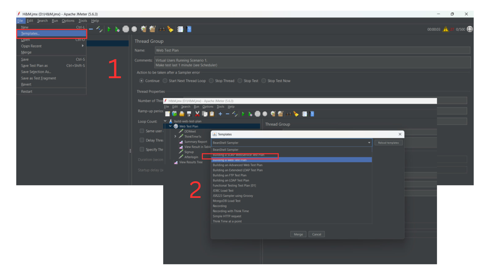 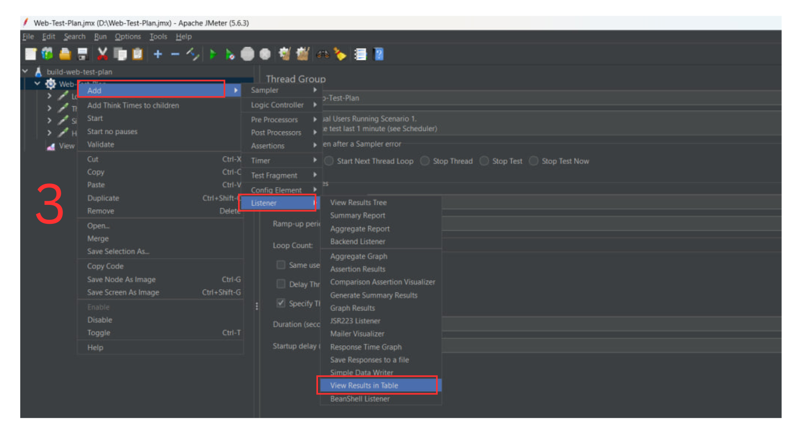
Open Jmeter Application > Click File > Click Templates.
Search for option “Building a Web Test Plan” and click “Create it”.
Configuring the Test Scenario
This will be “Scenario 1” by default. This section the tester can change the amount of users, the period and also loop count.
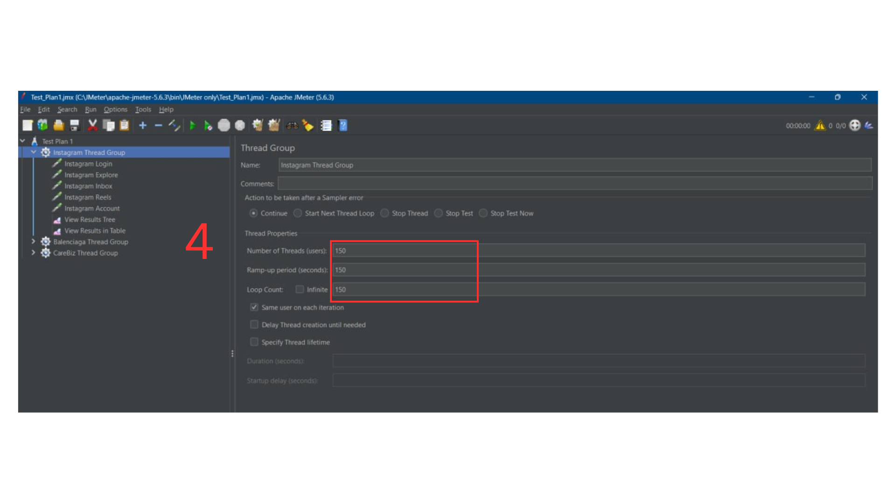
Configuring the Instagram Login Test
For this section, the tested website is Instagram. This is for Instagram Login. The tester needs to retrieve the server name or ip, modify the protocol, and can modify the path according to the tested website.
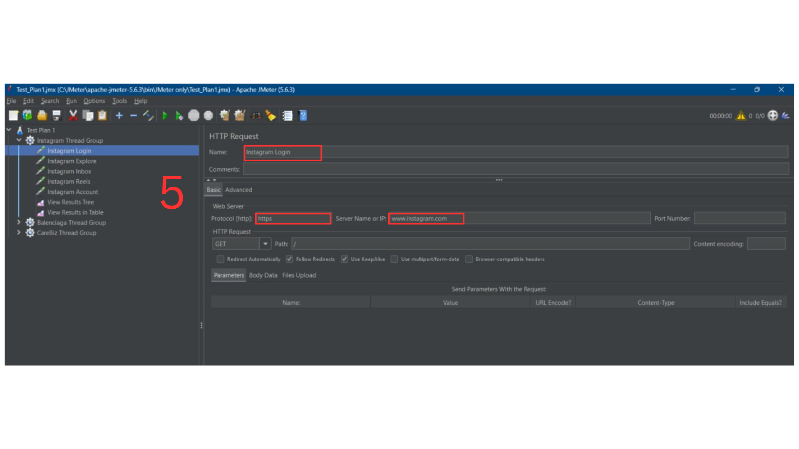
Configuring the Instagram Explore Test
For this section, the tested section is Instagram Explore. So the tester needs to modify the server name and also the path.
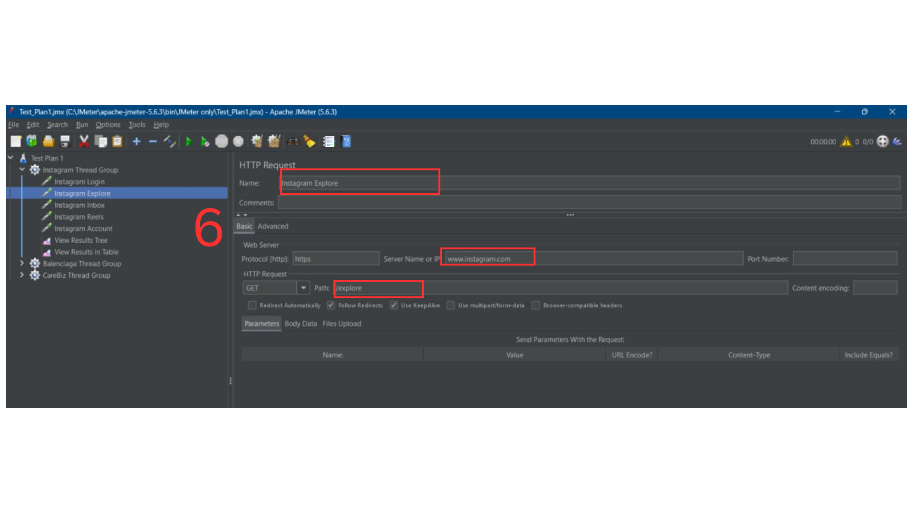
Configuring the Instagram Inbox Test
For this section, the tested section is Instagram Inbox. So the tester needs to modify the server name and also the path.
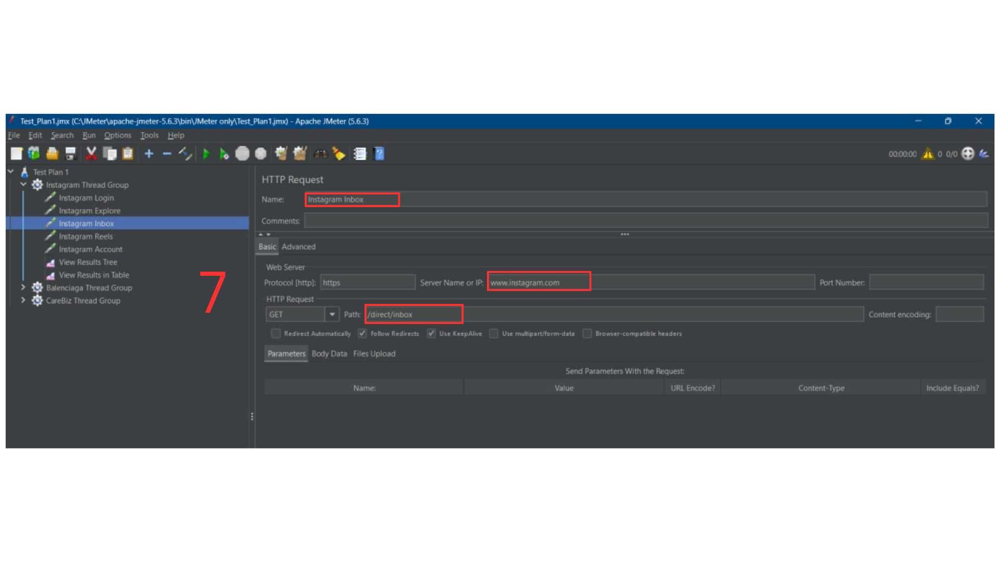
Configuring the Instagram Reels Test
For this section, the tested section is Instagram Reels. So the tester needs to modify the server name and also the path.
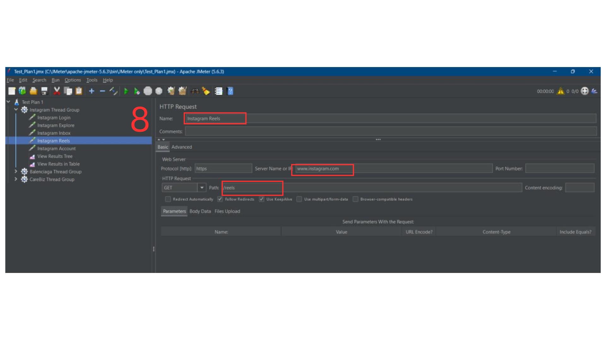
Configuring the Instagram Account Test
For this section, the tested section is Instagram Account. So the tester needs to modify the server name and also the path.
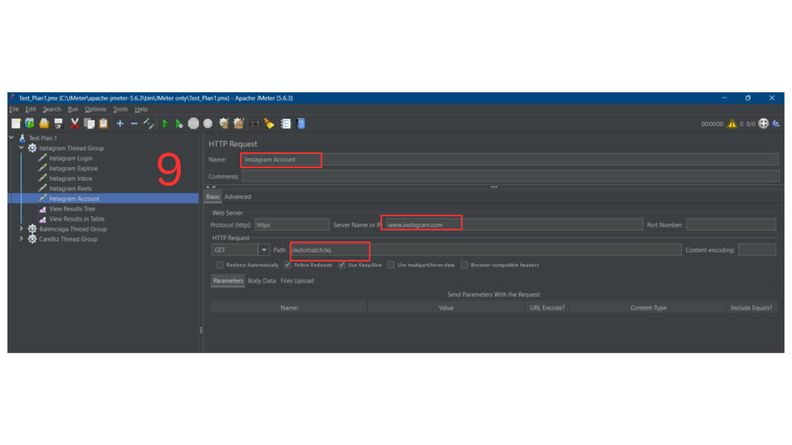
Viewing the Results in the Table
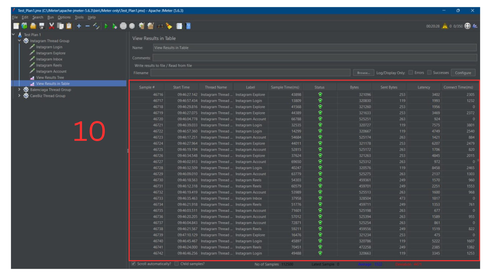
Once the test is executed, the tester can view the results in the View Result Tree listener. The table will display performance statistics for the test, such as response times, error rates, and throughput.
The displayed statistics help assess the system’s performance under the specified load and identify any bottlenecks or issues encountered during testing.